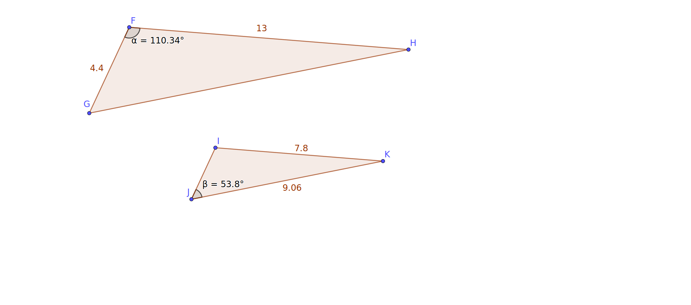

Exploration 5.3.1.
(a)
Figure 5.3.1 gives a triangle \(\Delta ABC\) and its image \(\Delta A'B'C'\text{.}\) Use either the GeoGebra applet or the coordinate system to complete the following.
(i)
Determine the center \(O\) of the dilation that takes \(\Delta ABC\) to \(\Delta A'B'C'\text{.}\)
Hint.
What lines must \(O\) lie on?
(ii)
Determine \(\frac{OA'}{OA}\text{,}\) \(\frac{OB'}{OB}\text{,}\) and \(\frac{OC'}{OC}\text{.}\) What do these ratios tell you about the dilation?
Hint.
Besides the center, what else defines a dilation?
(iii)
Is it true that \(\frac{OA'}{AA'}=\frac{OB'}{BB'}=\frac{OC'}{CC'}\) ? Are these equal to the scale factor?
(iv)
Is it true that \(\frac{A'B'}{AB}=\frac{B'C'}{BC}=\frac{A'C'}{AC}\) ? Are these equal to the scale factor?
(v)
Which pairs of angles must be congruent?
Hint.
There are three pairs in the original sketch of the two triangles. If you want an added challenge you can find more pairs using your center as a side point.
(b)
In Figure 5.3.2, \(\Delta FGH\sim\Delta IJK\). Also, \(FG=4.4, FH=13, IK=7.8, JK=9.06, m\angle GFH=110.34\deg\) and \(m\angle IJK=53.8\deg\)Determine the following:
1
The triangles are similar

(i)
\(m\angle FGH\)
(ii)
\(m\angle FHG\)
(iii)
\(m\angle JIK\)
(iv)
\(m\angle KIJ\)
(v)
The scale factor of the dilation that takes \(\Delta FGH\) to \(\Delta IJK\)
(vi)
\(GH\)
(vii)
\(IJ\)